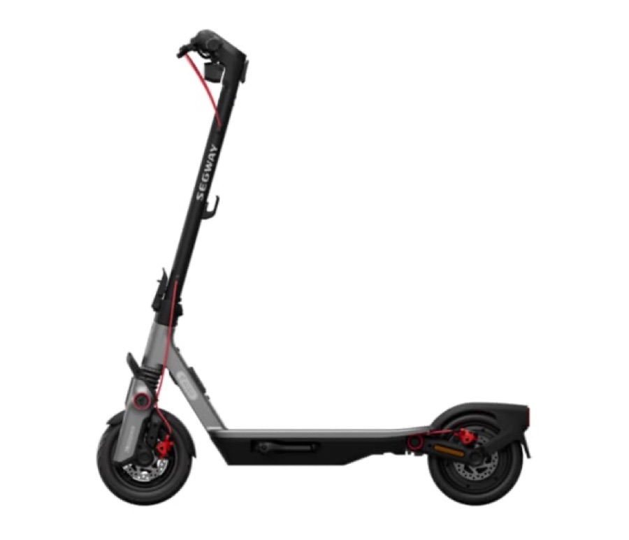
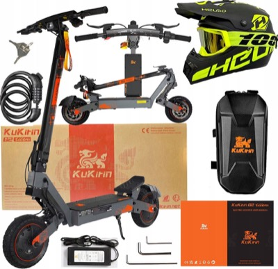
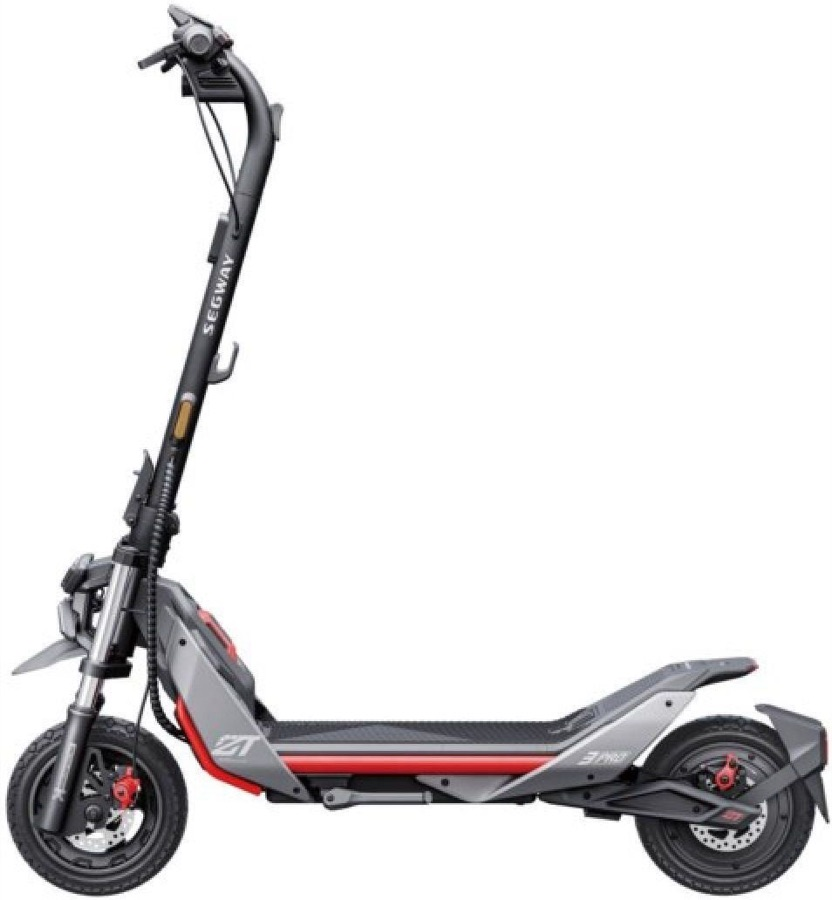
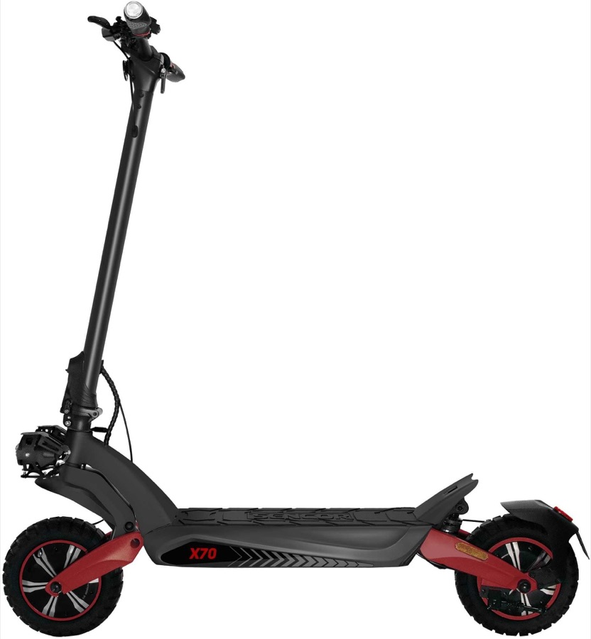
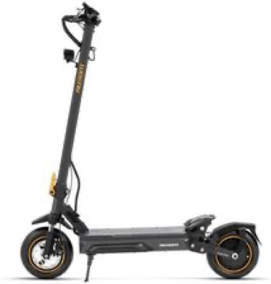
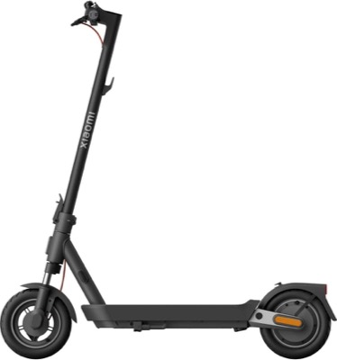
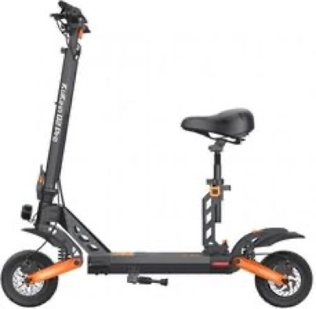
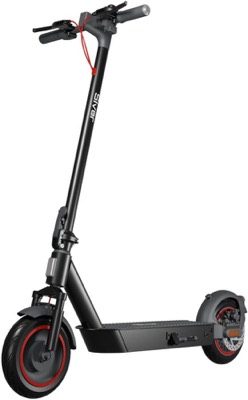

Аня! Ты самая хорошая — и тебе нужна самая хорошая хулайнога!
Самая хорошая хулайнога — для Ани 🛴
tłumaczenie: „Ania! Jesteś najlepsza — i potrzebujesz najlepszej hulajnogi!”
Hulajnoga dla Ani
Przeczesane 69 modeli z polskich sklepów. Poniżej te, które naprawdę jeżdżą też poza asfaltem.
cena: do 3 000 złkoła: 10 cali i więcejamortyzacja: przód i tyłkonstrukcja: składanawaga: do 22 kg
WYBÓR NA SKRÓTYTrzy, które warto rozważyć
Te trzy pokrywają wszystkie scenariusze. Waga decyduje o tym, czy hulajnogę wniesiesz po schodach i zmieścisz w bagażniku — dlatego przy każdym modelu piszę, do czego realnie wystarczy.
🥇
Segway Ninebot F3 Pro D
Najlepszy kompromis: hamulce tarczowe przód i tył, pełna amortyzacja, wodoszczelność IPX6, 19,3 kg.
2 559 zł
🪶
Motus Scooty 10 Pro
19 kg, mocny silnik 600 W, polska marka z serwisem. Najlepszy stosunek tego, co daje, do ceny.
1 999 zł
⛰️
Motus Daytona 10
Prawdziwy teren: 1 000 W, opony pneumatyczne, tarcze z przodu i z tyłu. Waży 26 kg.
2 199 zł
SEKCJA 1 · WAGA DO 22 KGUniwersalne — miasto i lekki teren
Szuter, ścieżki leśne, krawężniki, trawa. Lekkie na tyle, żeby wnieść je po schodach i włożyć do bagażnika. Ułożone od najlepszych. W parametrach: zielone = atut, bursztynowe = kompromis.
Wybór nr 1

Segway Ninebot F3 Pro D
2 559 zł
19,3 kgkoła 10 cali bezdętkowesilnik 500 W (1 200 W)przód + tyłtarcza + tarcza70 kmpodjazd 24°IPX6gwarancja 24 mies.
Najwięcej rzeczy, które w terenie pracują, w najmniejszej wadze: hamulce tarczowe z obu stron, pełna amortyzacja, opony bezdętkowe (rzadziej łapią kapcia) i najlepsza wodoszczelność. Do tego kierunkowskazy, ekran i największa sieć serwisowa w Polsce.
Najmocniejszy silnik w tej wadze — 600 W nominalnie, czyli więcej niż droższy Segway. Polska marka z serwisem w Krakowie. Kompromis: hamulec z przodu bębnowy, nie tarczowy.
To jest ten model ze środka stawki — 800 W i 20° podjazdu przy 21 kg, czyli moc zbliżona do hulajnóg 25-kilogramowych, a waga jeszcze do noszenia. Najwięcej zasięgu w całej sekcji.
19 kgkoła 10 calisilnik 400 Wprzód + tyłhamulec bębnowy60 km
Najtańsza sensowna propozycja: lekka, pełna amortyzacja, przyzwoity zasięg. Silnik 400 W wystarczy na miasto i równe ścieżki — na strome podjazdy już nie.
22 kgkoła 10 calisilnik 500 Wprzód + tyłhamulec tarczowy45 km
Jedyny w zestawieniu oznaczony przez sprzedawców jako terenowy. Firma z Unii Europejskiej, więc serwis i części nie są egzotyką. Waga dokładnie na granicy 22 kg.
20,1 kgkoła 10 cali bezdętkowesilnik 350 W (700 W)tylko przódhamulec bęben + E-ABS60 km
Najtańsza z pewnym zapleczem: marka wszędzie dostępna, części i serwis w każdym mieście. Ale amortyzacja tylko z przodu — na dłuższą jazdę po nierównym wykluczona.
Tu zaczyna się sprzęt, który pojedzie po błocie, korzeniach i stromym podjeździe. Cena, którą płacisz, to waga — i dlatego te modele są ciężkie. To nie luka w rynku, to fizyka: duże opony, dwa amortyzatory, mocny silnik i duży akumulator ważą razem 25–26 kg.
Najtańszy prawdziwie terenowy: 1 000 W, opony pneumatyczne dętkowe (najlepsza trakcja na szutrze i piachu) i hamulce tarczowe z obu stron. Polska marka, serwis w Krakowie.
Najtańszy sposób, żeby wejść w klasę terenową: pełna amortyzacja, dwie tarcze i 800 W. Uwaga na dane: sklep producenta podaje 25 kg, porównywarka 27 kg — przed zakupem warto potwierdzić.
Najlżejszy w tej sekcji i z najdłuższym zasięgiem, ale silnik ma tylko 250 W nominalnie — to hulajnoga „długa trasa po równym”, nie wspinaczka. Dlatego jest niżej.
Sprawdziłem u producenta i tu jest niespodzianka: G2 Pro jest słabszy od zwykłego G2. G2 ma silnik 800 W (2 099 zł), a G2 Pro — 600 W za tę samą cenę. Do tego Pro ma koła 9 cali, czyli poniżej progu 10 cali, waży 27 kg i jest sprzedawany z fotelikiem, czyli jako wygodna hulajnoga miejska — z siedzeniem.
Więc: G2 Pro odpada nie na wadze, tylko na tym, że jest wolniejszy i mniejszy na kołach od tańszego G2. Jeżeli już KuKirin, to albo G2 (800 W, opony terenowe), albo G2 Ultra (2×800 W, 2 659 zł, ale 31 kg).
ODPADACzego nie kupować i dlaczego
Modele, które wyskakują w reklamach jako „terenowe”, ale nie przechodzą któregoś z kryteriów.

KuKirin G2 Ultra
31 kg
2×800 W i 2 659 zł — moc jest, ale to już prawie motocykl do noszenia

Segway Ninebot ZT3 Pro
29,7 kg
11 cali i 1 600 W, ale waga dyskwalifikuje

Sencor Scooter X70
30,5 kg
Najmocniejszy silnik w zestawieniu, ale 30,5 kg — nie do noszenia po schodach

Ausom Laluz 2 Pro
~27–30 kg
1 400 W i 90 km zasięgu, ale za ciężka

Xiaomi Electric Scooter 5 Pro
22,4 kg
Brakuje 0,4 kg do kryterium — waga wprost od producenta

KuKirin G2 Pro
27 kg
9 cali i silnik 600 W — słabszy od tańszego G2

Siver 10 Plus
19 kg
Ma jednego sprzedawcę w Polsce i zero opinii. „700 W” to moc szczytowa, nominalna 350 W
ZANIM KUPISZSześć rzeczy, które warto wiedzieć
1 · OPONY
Tylko pneumatyczne — dętkowe albo bezdętkowe. Opony pełne (lite) przenoszą każde uderzenie w ramę i w nadgarstki. To najważniejsza różnica między hulajnogą na asfalt i na szuter.
2 · CIŚNIENIE
Start 2,5–3,0 bar. Na szuter i piasek zejść do ok. 2,0 bar — trakcja rośnie. Warto wozić małą pompkę.
3 · WAGA
Deklaracje producentów są „netto”. Realnie dolicz 1–2 kg na błotniki, uchwyt i zamek. Przy progu 22 kg to różnica, którą czuć na schodach.
4 · PRĘDKOŚĆ
20 km/h to granica zgodna z przepisami. Segway, Motus, Navee i Xiaomi tyle jadą. Modele KuKirin czy Kamikaze potrafią 45 km/h — to sprzęt poza prawem na chodniku i drodze.
5 · NOWE PRZEPISY
Od 3 marca 2026 obowiązuje minimalny wiek 13 lat i kask do 16. roku życia.
6 · SERWIS
W terenie najczęściej padają dętki, łożyska kół i linki hamulców. Marka z szeroką siecią serwisową to tygodnie różnicy w naprawie — dlatego Segway, Motus i Xiaomi są wyżej niż równie dobre, ale egzotyczne marki.
SKĄD DANEIle w tym pewności
Żeby było jasne, które liczby są twarde, a które warte sprawdzenia.
PRZESIEW
69 modeli z polskich sklepów spełniało kryteria koła 10 cali i więcej oraz składana konstrukcja. Z tego 9 mieści się w 22 kg, a 6 w przedziale 23–26 kg.
🟢 TWARDE
Waga, silnik, koła, hamulce i amortyzacja sprawdzone u producentów i w danych technicznych sklepów dla: Segway F3 Pro D, Motus Daytona 10 i Scooty 10 Max, Kamikaze K1 / K1 Plus / K1 Lite, Navee GT3 Max, KuKirin G2 i G2 Pro, Xiaomi 5.
🟡 DO SPRAWDZENIA
Dwie rozbieżności w danych, które znalazłem: Kamikaze K1 Lite — 25 kg (sklep) vs 27 kg (porównywarka) oraz KuKirin G2 — 26 kg (producent) vs 22 kg (porównywarka). W obu przypadkach podaję wersję producenta.
⚪ CZEGO NIE WIEM
Szerokość opony i skok zawieszenia nie są publikowane nigdzie. A to dwa parametry, które w cięższym terenie decydują najbardziej.
CENY
Stan na 12 września 2026. W tej kategorii ceny ruszają się o 300–500 zł przy promocjach, więc każdy kafelek prowadzi do aktualnych ofert.